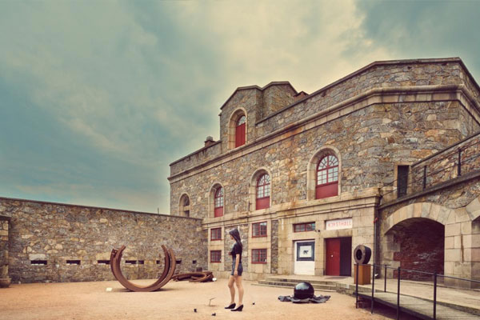
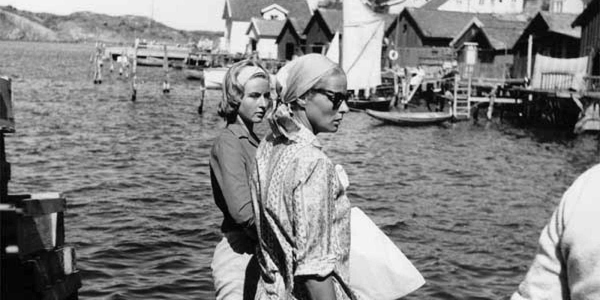
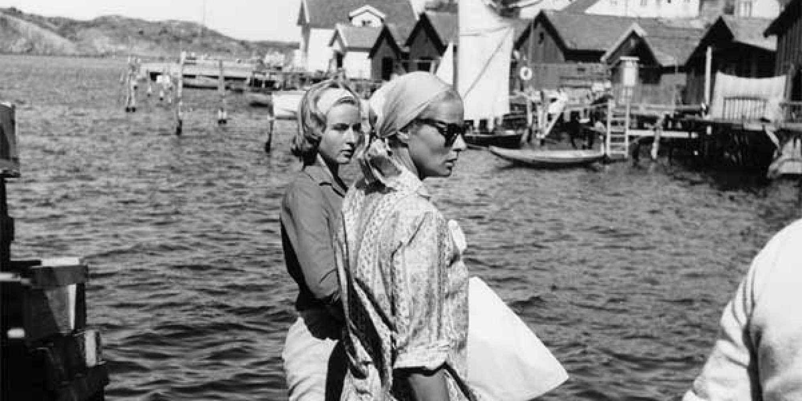
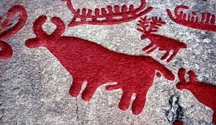
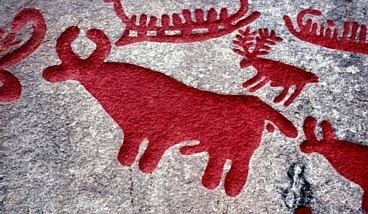

Cosa vedere? (di Nadia e Lucia)
IL MUSEO DI ARTE STRANDVERKET

Ingrid Bergman a Fjällbacka


Quest'anno il Museo ha celebrato il centenario della nascita dell'attrice Ingrid Bergman con una mostra fotografica "Ascesa e caduta di Ingrid Bergman. E di nuovo ascesa". L'attrice trascorse quasi tutte le estati,dal 1958 al 1982, a Fjällbacka e l'affetto che dimostrava per quei luoghi fu ricambiato dai locali con un busto in bronzo dedicato all' attrice e collocato vicino al porto.
INCISIONI RUPESTRI


A nord di Fjällbacka, a circa 17 Km. si trova la città di Tanumshede dove sono stati scoperti più di 500 luoghi di ritrovamento di incisioni rupestri che insieme contengono circa diecimila petroglifi risalenti all’età del bronzo e dichiarata Patrimonio dell’Umanità dell’UNESCO. Qui si trova la Vitlyckehall , la più grande roccia piatta della Scandinavia, è lunga 22 metri e ha quasi 300 incisioni rupestri. La roccia è stata scoperta nel 1972 da Age Nilsen mentre stava sistemando delle cariche esplosive per lavori di costruzione. L’area del patrimonio mondiale tra sentieri nel bosco e campi portano il visitatore alla scoperta di un vero tesoro preistorico; grazie alle scene rappresentate nelle incisioni rupestri sappiamo che le popolazioni nordiche dell’età del bronzo e del ferro erano abili nella navigazione e nella costruzioni di oggetti in legno, alcune immagini rappresentano scene di caccia o legate all’agricoltura, dove compaiono aratri e buoi.